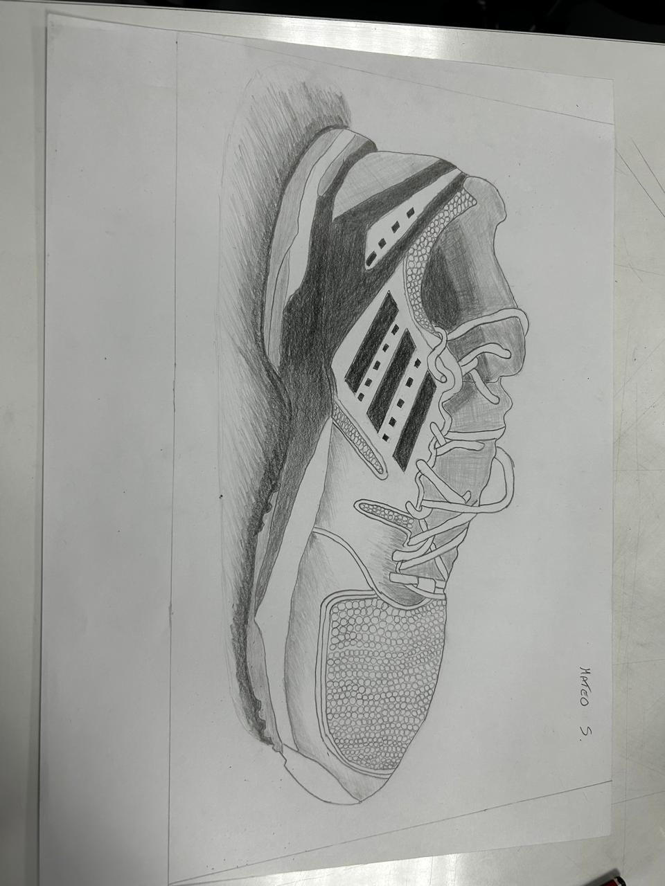
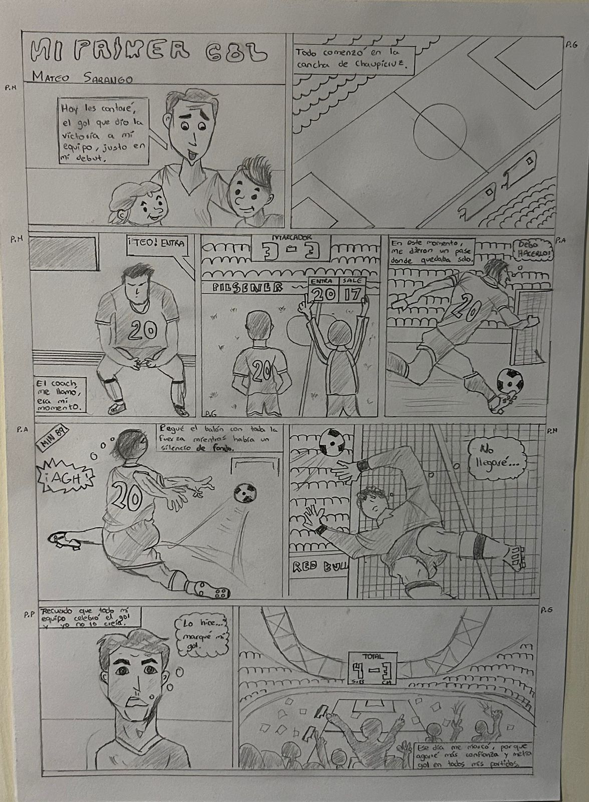
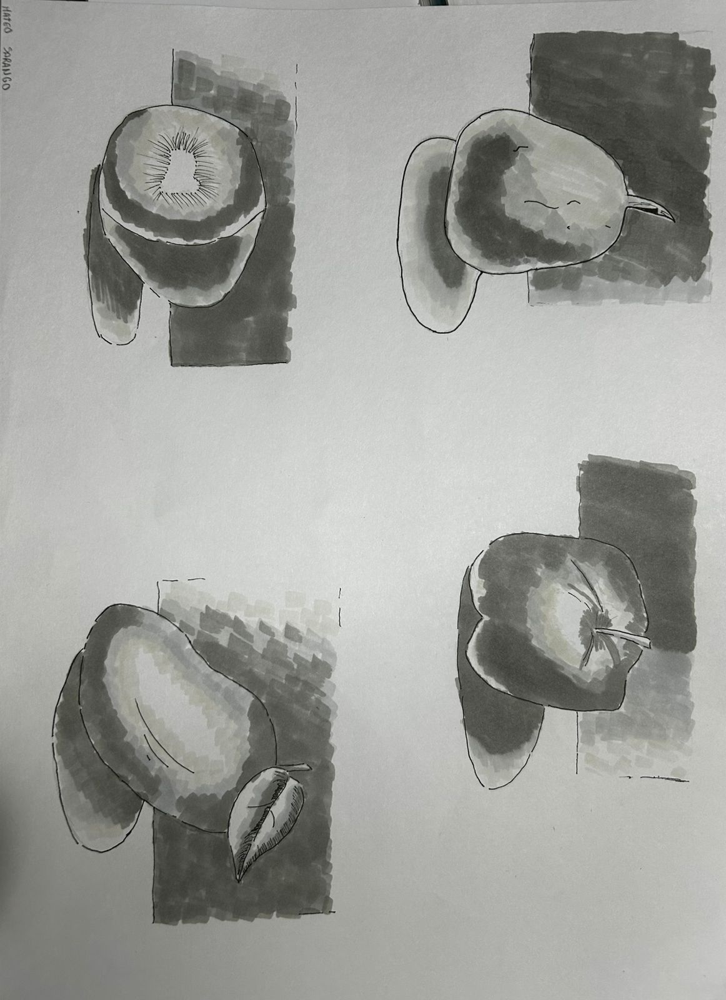

Durante el semestre pasado realicé varios ejercicios de dibujo. Al inicio no era algo que me llamara mucho la atención, pero mientras avanzaba en el proceso descubrí habilidades que no sabía que tenía.
Este proyecto me permitió entender que con práctica y dedicación es posible mejorar mucho en áreas nuevas. También me ayudó a desarrollar paciencia, observación y atención al detalle.


